เกี่ยวกับประเพณีสารทเดือนสิบ
ประเพณีสารทเดือนสิบหรือประเพณีชิงเปรต เป็นงานบุญประเพณีของคนภาคใต้ ซึ่งเป็นความเชื่อของพุทธศาสนิกชนที่เชื่อว่าบรรพบุรุษ ได้แก่ ปู่ ย่า ตา ยาย และญาติพี่น้องที่ล่วงลับไปแล้ว ผู้ที่ทำบาปไว้มากจะตกนรก กลายเป็นเปรต ต้องทนทุกข์ทรมานในอเวจี ต้องอาศัยผลบุญที่ลูกหลานอุทิศส่วนบุญกุศลให้ ในแต่ละปีมายังชีพ เมื่อถึงวันแรม 1 ค่ำ เดือน 10 พระยายมจะปล่อยคนบาปทั้งหลาย ที่เรียกว่า "เปรต” กลับไปพบญาติพี่น้องในเมืองมนุษย์ เพื่อมาขอส่วนบุญจากลูก หลาน ญาติ พี่น้อง และจะกลับไปนรก ในวันแรม 15 ค่ำ เดือน 10 ในโอกาสนี้ ลูก หลาน ญาติ พี่น้อง ที่ยังมีชีวิตอยู่ จึงนำอาหารไปทำบุญที่วัด เพื่ออุทิศส่วนบุญกุศลให้แก่ผู้ที่ล่วงลับไปแล้ว เพื่อแสดงความกตัญญูกตเวที
นอกจากนี้วันสารทยังเป็นช่วงที่โลกออกห่างดวงอาทิตย์มากที่สุดโดยถ้านับจากวันสงกรานต์จนถึงวันสารทจะเป็นเวลาประมาณหกเดือนพอดี หากจะนับช่วงเวลาทางจันทรคติคือแรม 15 ค่ำ (หรือ 14) ซึ่งเป็นเดือนดับและเป็นเวลาที่โลกมืดมิดที่สุด ความเชื่อของคนโบราณในแถบภูมิภาคนี้ จึงถือว่าเป็นเวลาที่วิญญาณกลับจากนรก ญาติพี่น้องจึงควรทำบุญ เพื่อแผ่ส่วนกุศลไปให้ ถ้าผู้ล่วงลับได้รับส่วนบุญได้อิ่มท้องก็จะให้พร ถ้าไม่มีใครทำบุญไปให้ก็จะเสียใจบางทีอาจโกรธและสาปแช่ง จนถือเป็นวันรวมญาติ วันบูชาบรรพบุรุษ ใครไม่ร่วมจะโดนดูถูกว่าอกตัญญู วันสงกรานต์นับตามสุริยคติ วันสารทจะนับตามจันทรคติ
ประวัติความเป็นมา
ประเพณีสารทเดือนสิบ สันนิษฐานว่าเป็นประเพณีที่รับมาจากอินเดียเหมือนกับประเพณีอื่น ๆ อีกหลายประเพณีที่ชาวนครศรีธรรมราชรับมา ทั้งนี้เพราะว่าชาวนครศรีธรรมราชติดต่อกับอินเดียมานานก่อนดินแดนส่วนอื่น ๆ ของประเทศไทย วัฒนธรรมและอารยธรรมของอินเดียส่วนใหญ่จึงถ่ายทอดมายังเมืองนครศรีธรรมราชเป็นแห่งแรก แล้วค่อย ๆ ถ่ายทอดไปยังเมืองอื่น ๆ และภูมิภาคอื่น ๆ ในประเทศไทย
ความหมายของสารทเดือนสิบ
คำว่า สารท เป็นภาษาบาลี มาจากคำว่า สรท [สะระ-] หมายถึง ฤดูใบไม้ร่วง, ฤดูสารท. (ป.; ส. ศรท). (พจนานุกรมฉบับราชบัณฑิตสถาน, 2554, น. 59) ซึ่งตรงกับคำว่า ศรท ในภาษาสันสกฤต
ดังนั้น สารท จึงเป็นคำของอินเดีย ใช้เรียกฤดูใบไม้ร่วง หรือ Autumn ในภาษาอังกฤษ ฤดูสารทเป็นฤดูเก็บเกี่ยวพืชพันธุ์ธัญญาหารของชาติที่อยู่ในดินแดนถัดเขตร้อนขึ้นไป ส่วนของวันเทศกาลสารทของไทยไม่ใช่เป็นฤดูใบไม้ร่วง หรือเป็นฤดูพืชพันธุ์ธัญชาติและผลไม้สุกเพราะข้าวยังไม่สุก ผลไม้ก็มีลางชนิดเท่านั้นที่สุกในฤดูนี้ แต่ในประเทศที่อยู่ถัดจากเขตร้อนขึ้นไปแล้ว ฤดูสารทนี้เป็นที่ยินดีปรีดาในหมู่ประชาชนของเขา เพราะพืชพันธุ์ธัญชาติและต้นไม้ที่ปลูกไว้กำลังให้ผลเป็นครั้งแรก เขาจึงถือเป็นเทศกาลที่ควรรื่นเริงยินดี ทำพิธีตามคติความเชื่อถือและนำผลไม้ที่เก็บเกี่ยวได้ไปทำขนมเซ่นพลี บูชาผีปู่ย่าตายาย หรือเทพเจ้าที่ตนนับถือ เพื่อขอบคุณที่ดลบันดาลให้ตนเก็บเกี่ยวพืชผลได้
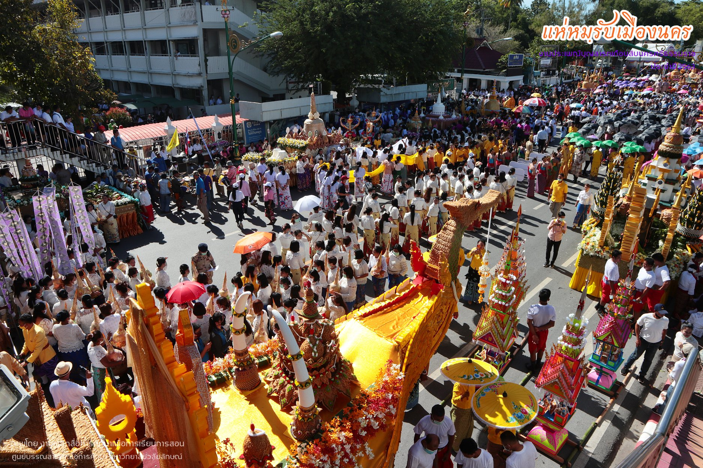
การเกิดประเพณีสารทเดือนสิบ
ความเชื่อเกี่ยวกับเรื่องเปรต มีกันนับถือกันอย่างแพร่หลายในอินเดียและมีมานแล้ว ครั้งมีพระพุทธศาสนาแล้ว พุทธศาสนาจึงรับเอาเรื่องเก่าแก่สืบเนื่องกันมามาช้านานนี้มาปฏิบัติในศาสนาด้วย แต่แก้เป็นว่า ผู้ไปเกิดในดินแดนแห่งเปรต เป็นเพราะบาปกรรมที่ตนได้ก่อไว้ อาจจะผ่อนผลนั้นให้เบาลงได้ ถ้าหากว่าลูกหลานญาติมิตรทำบุญอุทิศข้าวปลาอาหารและปัจจัยอื่น ๆ ไปให้ ดังนั้นในการทำบุญเลี้ยงพระที่เรียกว่า ปุพพเปตพลี (คือพิธีเซ่นบรรพบุรุษที่ตายไปเป็นเปรต) หรือการทำบุญเป็นทุกษิณานุปทาน (คือทำบุญอุทิศไปให้) คงจะมีความคลี่คลายใจจากเรื่องพิธีศราทธ์ หรือพิธีเลี้ยงพราหมณ์ของชาวอินเดียดั้งเดิมนั่นเอง
ประเพณีสารทเดือนสิบของเมืองนครศรีธรรมราช คงจะเกิดขึ้นตามพระพุทธานุญาตของพระพุทธองค์ และด้วยเหตุผลในทำนองเดียวกันกับที่ชาวอินเดียมีประเพณีเปตพลี เพื่อเป็นการแสดงความกตัญญููต่อบุพการีนั่นเอง และเหตุผลสำคัญที่เทศกาลการทำบุญของชาวนครศรีธรรมราชมีหลายประการ
• ประการแรก ตามความเชื่อทางพุทธศาสนา เชื่อว่าในปลายเดือนสิบนั้น ปูย่าตายายและญาติพี่น้องซึ่งล่วงลับไปแล้ว โดยเฉพาะคนที่บาปมากจะตกนรกซึ่งเรียกว่า เปรต (คือ ผู้ตายล่วงหน้าไปก่อน) จะได้รับการปล่อยตัวจากพญายม เพื่อให้ขึ้นมาพบญาติพี่น้องและลูกหลานของตนในเมืองมนุษย์ในวันแรมค่ำหนึ่ง เดือนสิบ และให้กลับลงไปอยู่ในนรกดังเดิม ในวันแรม 15 ค่ำ เดือนสิบ ดังนั้น ในโอกาสที่ญาติพี่น้องที่ตกนรกได้ขึ้นมาเยี่ยมเยี่ยนนี่เอง ผู้ที่ยังมีชีวิตอยู่จึงพยายามที่จะหาอาหารต่าง ๆ ไปทำบุญตามวัดต่าง ๆ เพื่อเป็นการอุทิศส่วนกุศลแก่ผู้ที่ล่วงลับขึ้นมาจากนรก ทั้งนี้เพราะกลัวว่าญาติมิตรของตนที่ขึ้นมาจากนรกจะอดหยากหิวโหย โดยทำบุญในวันแรกที่ผู้ล่วงลับขึ้นมาจากนรก คือ วันแรมคำ่หนึ่ง เดือนสิบ ซึ่งชาวนครศรีธรรมราชบางท้องที่เรียกวันนี้ว่า วันหฺมฺรับเล็ก ครั้นถึงกำหนดวันที่ผู้ล่วงลับไปแล้วเหล่านั้นจะต้องกลับลงไปอยู่ในนรกดังเดิม (คือวันแรม 15 ค่ำ เดือนสิบ) จะมีการจัดทำพิธีทำบุญอุทิศส่วนบุญส่วนกุศลเป็นการส่งผู้ที่ล่วงลับไปแล้วอีกครั้งหนึ่ง ชาวนครศรีธรรมราชบางท้องถิ่นเรียกวันนี้ว่า วันหฺมฺรับใหญ่
• ประการที่สอง ในปลายเดือนสิบอันเป็นเทศกาลสารทนั้น เป็นระยะที่พืชพันธุ์ต่าง ๆ กำลังให้ผล ดังนั้นชาวเมืองส่วนใหญ่ซึ่งมีอาชีพทางการเกษตร จะชื่นชมกับผลิตผลที่ตนสู้ลงทุนลงแรงมานานหลายเดือน การแสดงออกซึ่งความชื่นชมที่นิยมกระทำกันคือ จัดทำบุญตามประเพณีที่เคยปฏิบัติกันมา ในงานบุญนี้ชาวบ้านจะนำพืชผลมาถวายพระสงฆ์
•ประการที่สาม เพื่อเป็นการแสดงความสนุกสนานประจำปีร่วมกัน ซึ่งชาวนครศรีธรรมราชนิยมชมชอบการละเล่นพื้นบ้าน งานรื่นเริง และงานสนุกสนาน จึงถือโอกาสให้มีความรื่นเริงสนุกสนานไปด้วย
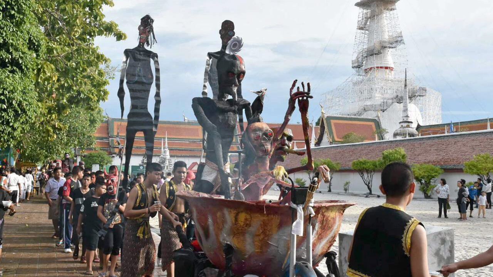
ความสำคัญและสาระสำคัญ
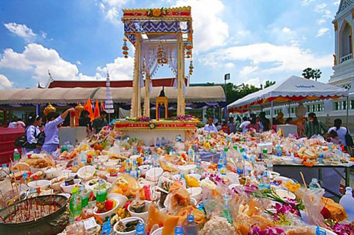ประเพณีสารทเดือนสิบมีสาระสำคัญหลายประการ ดังนี้
1. เป็นการแสดงความกตัญญูกตเวทีต่อบรรพบุรุษที่ล่วงลับไปแล้ว ที่ได้อบรมเลี้ยงดูลูกหลาน เพื่อตอบแทนบุญคุณ ลูกหลานจึงทำบุญอุทิศส่วนกุศลไปให้
2. เป็นโอกาสได้รวมญาติที่อยู่ห่างไกล ได้พบปะทำบุญร่วมกันสร้างความรักใคร่สนิทสนมในหมู่ญาติ
3. เป็นการทำบุญในโอกาสที่ได้รับผลผลิตทางการเกษตรที่เริ่มออกผลเพราะเชื่อว่าเป็นสิริมงคลแก่ตนเองและครอบครัว
4. ฤดูฝนในภาคใต้จะเริ่มขึ้นในปลายเดือนสิบ พระภิกษุสงฆ์บิณฑบาตยากลำบาก ชาวบ้านจึงจัดเสบียงอาหารนำไปถวายพระในรูปของหฺมฺรับ ให้ทางวัดได้เก็บรักษาเป็นเสบียงสำหรับพระภิกษุสงฆ์ในฤดูฝน
การประกอบพิธีกรรมในวันสารทเดือนสิบ
.jpg)
1. การจัดหมฺรับ คือ การบรรจุและประดับด้วยสิ่งของอาหาร ขนมเดือนสิบลงในภาชนะที่เตรียมไว้ เช่น ถาด กาละมัง ฯลฯ ชั้นล่างสุดบรรจุอาหารแห้ง ชั้นสองเป็นพืชผักที่เก็บไว้ได้นาน ชั้นสามเป็นของใช้ในชีวิตประจำวัน ชั้นบนสุดประดับขนมได้แก่ ขนมพอง ขนมลา ขนมบ้า ขนมเมซำ ขนมเทียน
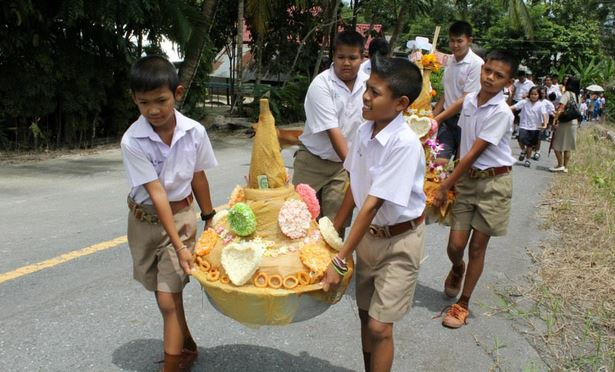2. การยกหมฺรับชาวบ้านจะยกหมฺรับที่จัดเตรียมไว้ไปวัด และนำภัตตาหารไปถวายพระด้วย โดยไปวัดที่อยู่ใกล้บ้าน หรือวัดที่บรรพบุรุษของตนนิยมไป
.jpg)
3. การฉลองหมฺรับและบังสุกุลเมื่อนำหมฺรับไปวัดแล้ว จะมีการฉลองหมฺรับ และทำบุญเลี้ยงพระเสร็จแล้วจึงมีการบังสกุล เพื่ออุทิศส่วนบุญให้แก่ผู้ที่ล่วงลับไปแล้ว
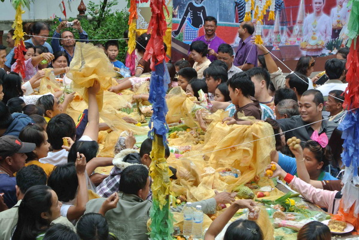4. การตั้งเปรตเสร็จจากการฉลองหมฺรับและถวายภัตตาหารแล้ว ชาวบ้านจะนำขนมอีกส่วนหนึ่งไปวางไว้ตามบริเวณลานวัด ข้างกำแพงวัด เรียกว่า ตั้งเปรต เพื่อแผ่ส่วนกุศลเป็นทานผู้ล่วงลับที่ไม่มีญาติ หรือญาติไม่มาร่วมทำบุญให้ การชิงเปรตจะทำตอนตั้งเปรตเสร็จแล้ว เพราะเชื่อว่าถ้าหากใครได้กินของเหลือจาการเซ่นไหว้บรรพบุรุษ จะได้รับกุศลเป็นสิริมงคลแก่ตนเอง บางวัดนิยมสร้างร้านเปรต เพื่อสะดวกแก่การตั้งเปรต บางวัดสร้างร้านเปรตไว้บนเสาสูงเพียงเสาเดียว รอบเสาชะโลมน้ำมันให้ลื่น เมื่อเวลาชิงเปรตผู้ชนะ คือผู้ที่สามารถปีนไปถึงร้านเปรตซึ่งต้องใช้ความพยายามมาก จึงสนุกสนานและตื่นเต้น
ขนมวันสารทเดือนสิบและความหมาย
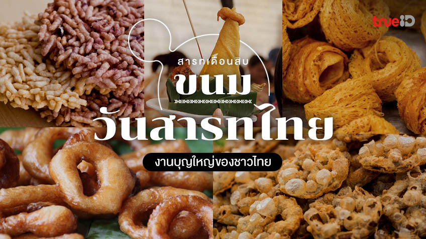 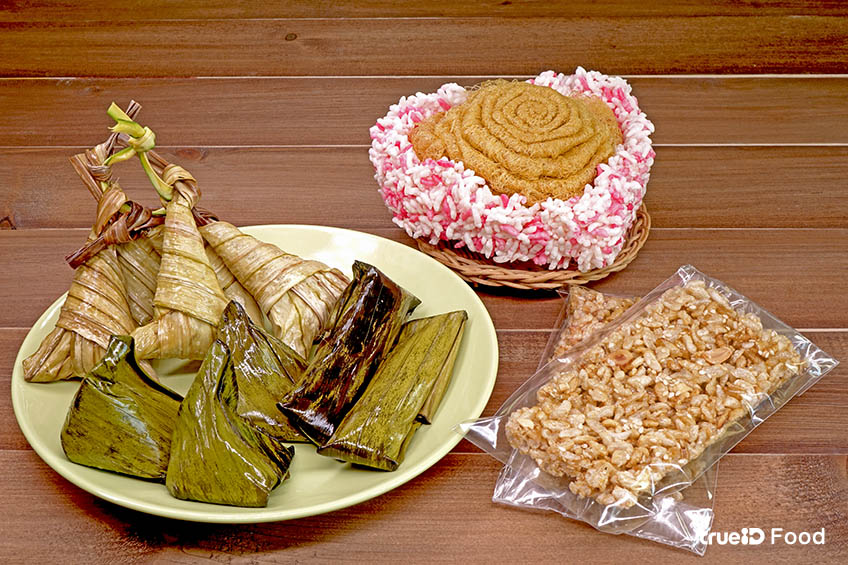ขนมสารทเดือนสิบ ขนมวันสารทไทย หรือ ของเซ่นไหว้สำคัญ 5 อย่าง ที่จัดไว้ให้เปรต(หรือผู้ล่วงลับ) จะถูกจัดอยู่ใน หฺมฺรับ (อ่านว่า หมับ แปลว่า สำรับ) ประกอบด้วยอาหารคาวหวานต่างๆ ที่ผู้ตายชอบทาน และที่จะขาดไม่ได้ก็คือขนม 5 อย่างต่อไปนี้
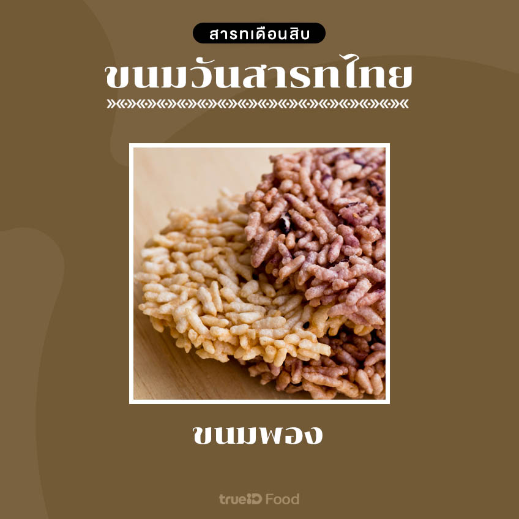ขนมพอง ทำมาจากข้าวเหนียวนึ่งสุกแล้วนำไปตากแห้ง จากนั้นนำมาทอดจนกรอบฟู เป็นสัญลักษณ์แทนแพหรือเรือที่ฟูฟ่อง มีน้ำหนักเบา ใช้ล่องข้ามห้วงมหรรณพล่องพาดวงวิญญานข้ามสังสารวัฏสู่สุคติ
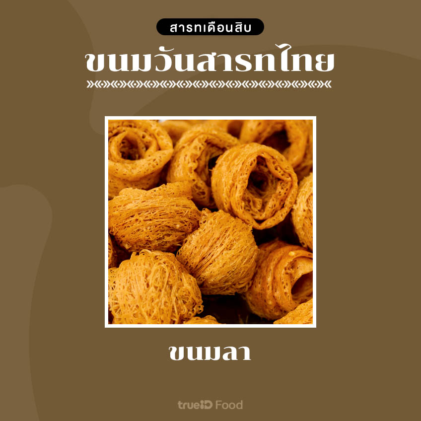ขนมลา เป็นขนมที่ทำจากแป้งและน้ำตาลมะพร้าว นำมาโรยเป็นสายเล็กๆ ในกระทะที่มีน้ำมัน ปัจจุบันขนมลามีทั้งแบบกรอบ และแบบนิ่มที่สามารถแผ่เป็นผืนใหญ่ ที่มีลักษณะเป็นเส้นใย สื่อความหมายแทนแพรพรรณเครื่องนุ่มห่ม
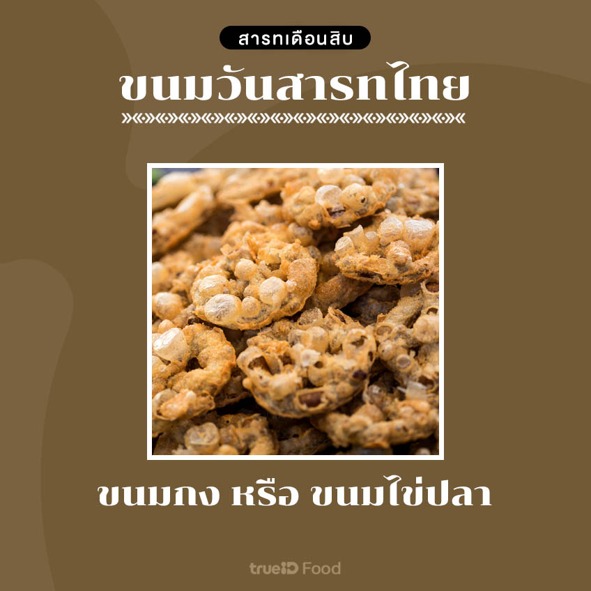ขนมกง หรือ ขนมไข่ปลา ขนมโบราณ ทำจากถั่วเขียวผ่าซีกนำมาบดละเอียดและปั้น เป็นรูปคล้ายกงจักร หรือไข่ปลา แล้วนำไปชุบแป้งทอดจนกรอบ เป็นสัญลักษณ์แทนเครื่องประดับ สำหรับตกแต่งร่างกายให้แก่บรรพบุรุษ
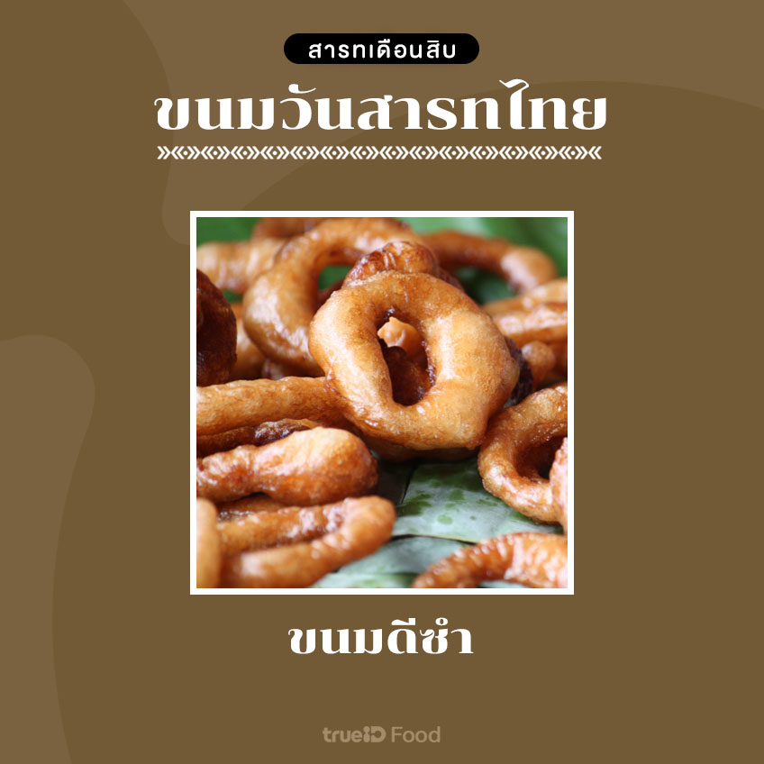ขนมดีซำ เป็นขนมที่ถูกปั้นเป็นวงกลมแล้วเจาะรูตรงกลาง จากนั้นนำไปทอดให้เหลือง ฟู ใช้เป็นสัญลักษณ์แทนเบี้ยหรือเงินทอง สำหรับให้บรรพบุรุษนำไปใช้สอยในโลกวิญญาน
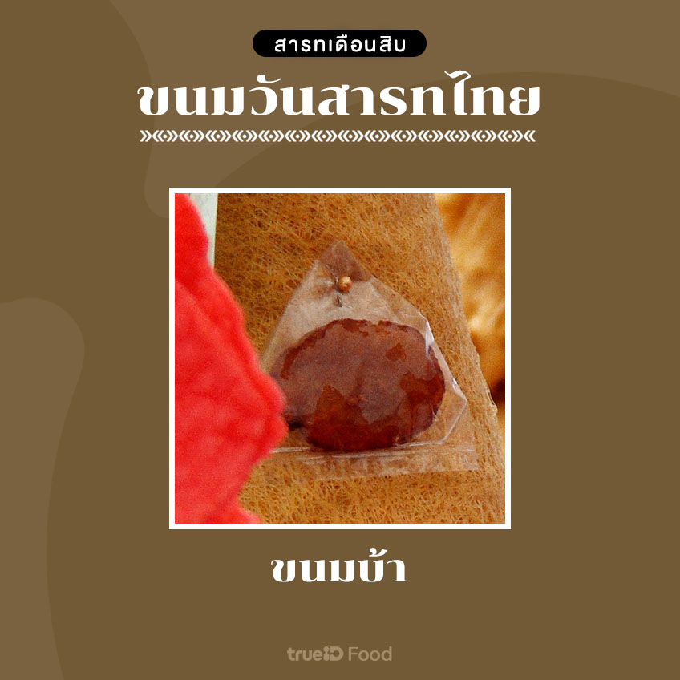ขนมบ้า เป็นส่วนผสมระหว่างมัน แป้ง และน้ำตาล จากนั้นปั้นขนมเป็นรูปทรงกลมๆ แบนๆ นำมาทอดจนกรอบ เป็นสัญลักษณ์แทนลูกสะบ้า สำหรับเล่นรับวันสงกรานต์ เพื่อสร้างความเพลิดเพลินให้แก่บรรพบุรุษ
นอกจากนี้ยังมีขนมที่ชาวไทยนิยมนำมาทำบุญ และนำมาเซ่นไหว้ในวันสารทไทย นอกหนือจากขนม 5 อย่างด้านบนแล้ว คือ
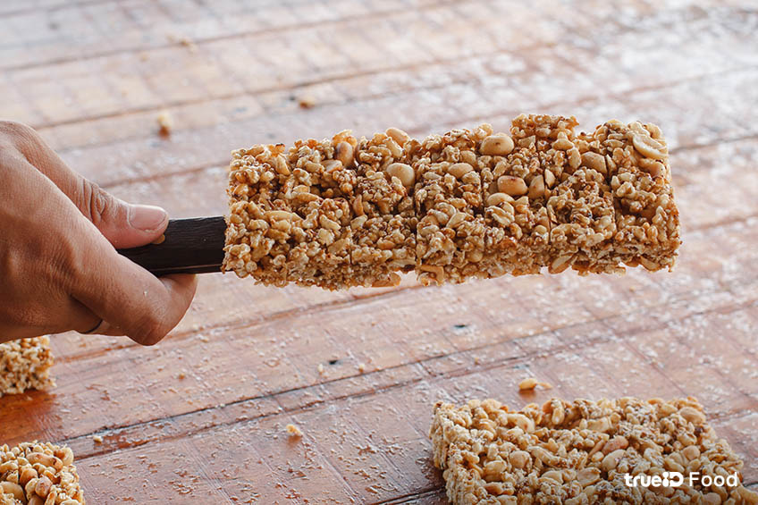• กระยาสารท : กระยาสารทเป็นขนมประจำวันสารท ในทุกท้องถิ่นของประเทศไทย ในช่วงเช้าชาวบ้านจะนำข้าวปลาอาหาร พร้อมขนมกระยาสารท และขนมหรืออาหารท้องถิ่นต่างๆ ไปตักบาตรที่วัด เพราะมีความเชื่อว่า ถ้าไม่ได้นำขนมกระยาสารทไปใส่บาตรในวันสารทไทย ญาติผู้ล่วงลับก็จะไม่ได้ส่วนบุญส่วนกุศลที่ทำไปให้
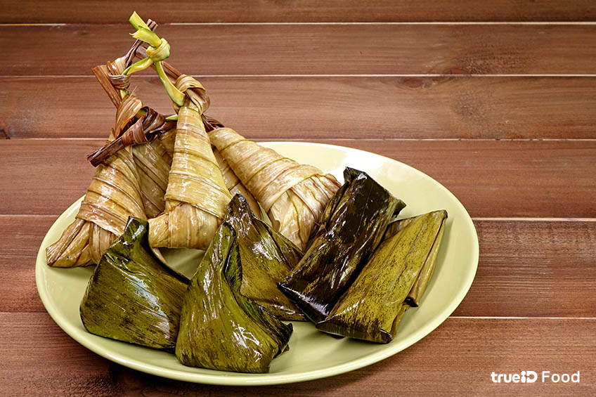• ขนมเทียน : มีความหมายใช้แทนหมอน สำหรับให้บรรพบุรุษใช้หนุนนอน และจะช่วยหนุนนำให้ลูกหลานมีความเจริญรุ่งเรือง
และยังมีของเซ่นไหว้บรรพบุรุษผู้ล่วงลับที่ขาดไม่ได้ อาหารคาวที่ขาดไม่ได้ในครัวชาวใต้อย่าง ข้าวสาร กะปิเคย พริก หอม กระเทียม และขมิ้น ของจำเป็นในห้องครัว เพื่อให้ผู้ล่วงลับยังมีกินมีใช้ไม่ขาด
ข้อมูลอ้างอิงและเว็บไซต์ข้อมูล
ข้อมูล
ประเพณีบุญสารทเดือนสิบการประกอบพิธีกรรมและความหมาย สาระสำคัญของประเพณีบุญสารทเดือนสิบ ประวัติความเป็นมาของประเพณีบุญสารทเดือนสิบรูปภาพ
ขนมวันสารทเดือนสิบและความหมาย รูปภาพการจัดหฺมฺรับ รูปภาพงานวันสารทเดือนสิบวีดีโอ
Youtube : Normoyanawet.png)